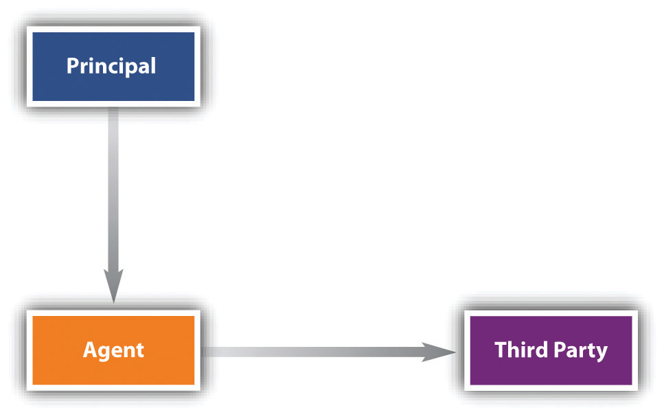
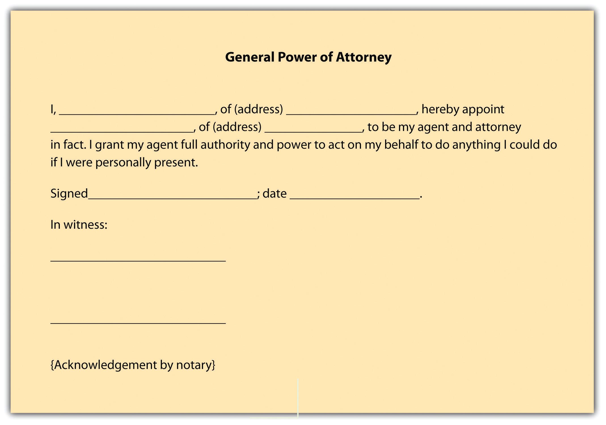
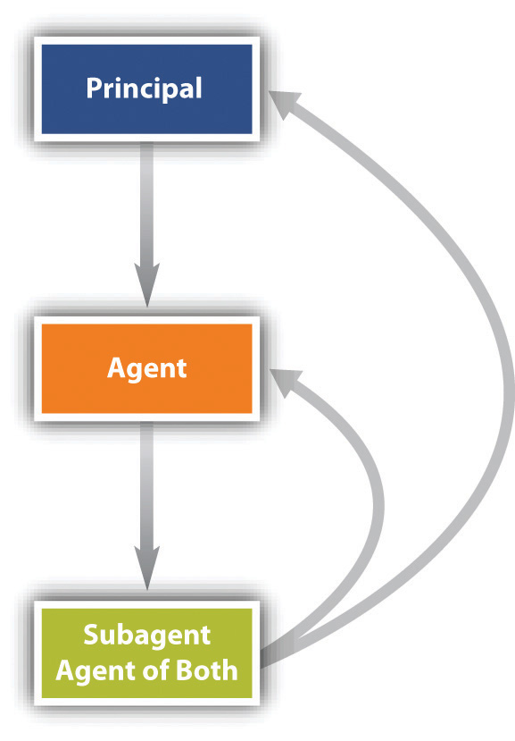

An agent is a person who acts in the name of and on behalf of another, having been given and assumed some degree of authority to do so. Most organized human activity—and virtually all commercial activity—is carried on through agency. No corporation would be possible, even in theory, without such a concept. We might say “General Motors is building cars in China,” for example, but we can’t shake hands with General Motors. “The General,” as people say, exists and works through agents. Likewise, partnerships and other business organizations rely extensively on agents to conduct their business. Indeed, it is not an exaggeration to say that agency is the cornerstone of enterprise organization. In a partnership each partner is a general agent, while under corporation law the officers and all employees are agents of the corporation.
The existence of agents does not, however, require a whole new law of torts or contracts. A tort is no less harmful when committed by an agent; a contract is no less binding when negotiated by an agent. What does need to be taken into account, though, is the manner in which an agent acts on behalf of his principal and toward a third party.
Several problematic fact scenarios recur in agency, and law has developed in response.
Consider John Alden (1599–1687), one of the most famous agents in American literature. He is said to have been the first person from the Mayflower to set foot on Plymouth Rock in 1620; he was a carpenter, a cooper (barrel maker), and a diplomat. His agency task—of interest here—was celebrated in Henry Wadsworth Longfellow’s “The Courtship of Miles Standish.” He was to woo Priscilla Mullins (d. 1680), “the loveliest maiden of Plymouth,” on behalf of Captain Miles Standish, a valiant soldier who was too shy to propose marriage. Standish turned to John Alden, his young and eloquent protégé, and beseeched Alden to speak on his behalf, unaware that Alden himself was in love with Priscilla. Alden accepted his captain’s assignment, despite the knowledge that he would thus lose Priscilla for himself, and sought out the lady. But Alden was so tongue-tied that his vaunted eloquence fell short, turned Priscilla cold toward the object of Alden’s mission, and eventually led her to turn the tables in one of the most famous lines in American literature and poetry: “Why don’t you speak for yourself, John?” John eventually did: the two were married in 1623 in Plymouth.
Let’s analyze this sequence of events in legal terms—recognizing, of course, that this example is an analogy and that the law, even today, would not impose consequences on Alden for his failure to carry out Captain Standish’s wishes. Alden was the captain’s agent: he was specifically authorized to speak in his name in a manner agreed on, toward a specified end, and he accepted the assignment in consideration of the captain’s friendship. He had, however, a conflict of interest. He attempted to carry out the assignment, but he did not perform according to expectations. Eventually, he wound up with the prize himself. Here are some questions to consider, the same questions that will recur throughout the discussion of agency:
As these questions suggest, agency law often involves three parties—the principal, the agent, and a third party. It therefore deals with three different relationships: between principal and agent, between principal and third party, and between agent and third party. These relationships can be summed up in a simple diagram (see Figure 20.1 "Agency Relationships").
Figure 20.1 Agency Relationships
In this chapter, we will consider the principal-agent side of the triangle. In the next chapter we will turn to relationships involving third parties.
There are five types of agents.
The general agentSomeone authorized to transact every kind of business for the principal. possesses the authority to carry out a broad range of transactions in the name and on behalf of the principal. The general agent may be the manager of a business or may have a more limited but nevertheless ongoing role—for example, as a purchasing agent or as a life insurance agent authorized to sign up customers for the home office. In either case, the general agent has authority to alter the principal’s legal relationships with third parties. One who is designated a general agent has the authority to act in any way required by the principal’s business. To restrict the general agent’s authority, the principal must spell out the limitations explicitly, and even so the principal may be liable for any of the agent’s acts in excess of his authority.
Normally, the general agent is a business agent, but there are circumstances under which an individual may appoint a general agent for personal purposes. One common form of a personal general agent is the person who holds another’s power of attorney. This is a delegation of authority to another to act in his stead; it can be accomplished by executing a simple form, such as the one shown in Figure 20.2 "General Power of Attorney". Ordinarily, the power of attorney is used for a special purpose—for example, to sell real estate or securities in the absence of the owner. But a person facing a lengthy operation and recuperation in a hospital might give a general power of attorney to a trusted family member or friend.
Figure 20.2 General Power of Attorney
The special agentAn agent hired by contract to carry out specifically stated activities. is one who has authority to act only in a specifically designated instance or in a specifically designated set of transactions. For example, a real estate broker is usually a special agent hired to find a buyer for the principal’s land. Suppose Sam, the seller, appoints an agent Alberta to find a buyer for his property. Alberta’s commission depends on the selling price, which, Sam states in a letter to her, “in any event may be no less than $150,000.” If Alberta locates a buyer, Bob, who agrees to purchase the property for $160,000, her signature on the contract of sale will not bind Sam. As a special agent, Alberta had authority only to find a buyer; she had no authority to sign the contract.
An agent whose reimbursement depends on his continuing to have the authority to act as an agent is said to have an agency coupled with an interestAn agency in which the agent has an interest in the property regarding which he or she is acting on the principal’s behalf. if he has a property interest in the business. A literary or author’s agent, for example, customarily agrees to sell a literary work to a publisher in return for a percentage of all monies the author earns from the sale of the work. The literary agent also acts as a collection agent to ensure that his commission will be paid. By agreeing with the principal that the agency is coupled with an interest, the agent can prevent his own rights in a particular literary work from being terminated to his detriment.
To carry out her duties, an agent will often need to appoint her own agents. These appointments may or may not be authorized by the principal. An insurance company, for example, might name a general agent to open offices in cities throughout a certain state. The agent will necessarily conduct her business through agents of her own choosing. These agents are subagentsThe agent of an agent. of the principal if the general agent had the express or implied authority of the principal to hire them. For legal purposes, they are agents of both the principal and the principal’s general agent, and both are liable for the subagent’s conduct although normally the general agent agrees to be primarily liable (see Figure 20.3 "Subagent").
Figure 20.3 Subagent
The final category of agent is the servantAn employee.. Until the early nineteenth century, any employee whose work duties were subject to an employer’s control was called a servant; we would not use that term so broadly in modern English. The Restatement (Second) of Agency, Section 2, defines a servant as “an agent employed by a master [employer] to perform service in his affairs whose physical conduct in the performance of the service is controlled or is subject to the right to control by the master.”
Not every contract for services necessarily creates a master-servant relationship. There is an important distinction made between the status of a servant and that of an independent contractorA person who is hired to accomplish a result but is not subject to specific control by the one hiring.. According to the Restatement (Second) of Agency, Section 2, “an independent contractor is a person who contracts with another to do something for him but who is not controlled by the other nor subject to the other’s right to control with respect to his physical conduct in the performance of the undertaking.” As the name implies, the independent contractor is legally autonomous. A plumber salaried to a building contractor is an employee and agent of the contractor. But a plumber who hires himself out to repair pipes in people’s homes is an independent contractor. If you hire a lawyer to settle a dispute, that person is not your employee or your servant; she is an independent contractor. The terms “agent” and “independent contractor” are not necessarily mutually exclusive. In fact, by definition, “… an independent contractor is an agent in the broad sense of the term in undertaking, at the request of another, to do something for the other. As a general rule the line of demarcation between an independent contractor and a servant is not clearly drawn.”1. Flick v. Crouch, 434 P.2d 256, 260 (OK, 1967).
This distinction between agent and independent contractor has important legal consequences for taxation, workers’ compensation, and liability insurance. For example, employers are required to withhold income taxes from their employees’ paychecks. But payment to an independent contractor, such as the plumber for hire, does not require such withholding. Deciding who is an independent contractor is not always easy; there is no single factor or mechanical answer. In Robinson v. New York Commodities Corp., an injured salesman sought workers’ compensation benefits, claiming to be an employee of the New York Commodities Corporation.Robinson v. New York Commodities Corp., 396 N.Y.S.2d 725, App. Div. (1977). But the state workmen’s compensation board ruled against him, citing a variety of factors. The claimant sold canned meats, making rounds in his car from his home. The company did not establish hours for him, did not control his movements in any way, and did not reimburse him for mileage or any other expenses or withhold taxes from its straight commission payments to him. He reported his taxes on a form for the self-employed and hired an accountant to prepare it for him. The court agreed with the compensation board that these facts established the salesman’s status as an independent contractor.
The factual situation in each case determines whether a worker is an employee or an independent contractor. Neither the company nor the worker can establish the worker’s status by agreement. As the North Dakota Workmen’s Compensation Bureau put it in a bulletin to real estate brokers, “It has come to the Bureau’s attention that many employers are requiring that those who work for them sign ‘independent contractor’ forms so that the employer does not have to pay workmen’s compensation premiums for his employees. Such forms are meaningless if the worker is in fact an employee.” Vizcaino v. Microsoft Corporation, discussed in Section 20.3.2 "Employee versus Independent Contractor", examines the distinction.
In addition to determining a worker’s status for tax and compensation insurance purposes, it is sometimes critical for decisions involving personal liability insurance policies, which usually exclude from coverage accidents involving employees of the insureds. General Accident Fire & Life Assurance Corp v. Pro Golf AssociationGeneral Accident Fire & Life Assurance Corp v. Pro Golf Association, 352 N.E.2d 441 (Ill. App. 1976). involved such a situation. The insurance policy in question covered members of the Professional Golfers Association. Gerald Hall, a golf pro employed by the local park department, was afforded coverage under the policy, which excluded “bodily injury to any employee of the insured arising out of and in the course of his employment by the insured.” That is, no employee of Hall’s would be covered (rather, any such person would have coverage under workers’ compensation statutes). Bradley Martin, age thirteen, was at the golf course for junior league play. At Hall’s request, he agreed to retrieve or “shag” golf balls to be hit during a lesson Hall was giving; he was—as Hall put it—to be compensated “either through golf instructions or money or hotdogs or whatever.” During the course of the lesson, a golf ball hit by Hall hit young Martin in the eye. If Martin was an employee, the insurance company would be liable; if he was not an employee, the insurance company would not liable. The trial court determined he was not an employee. The evidence showed: sometimes the boys who “shagged” balls got paid, got golfing instructions, or got food, so the question of compensation was ambiguous. Martin was not directed in how to perform (the admittedly simple) task of retrieving golf balls, no control was exercised over him, and no equipment was required other than a bag to collect the balls: “We believe the evidence is susceptible of different inferences.…We cannot say that the decision of the trial court is against the manifest weight of the evidence.”
The agency relationship can be created in two ways: by agreement (expressly) or by operation of law (constructively or impliedly).
Most agencies are created by contract. Thus the general rules of contract law covered in Chapter 8 "Introduction to Contract Law" through Chapter 16 "Remedies" govern the law of agency. But agencies can also be created without contract, by agreement. Therefore, three contract principles are especially important: the first is the requirement for consideration, the second for a writing, and the third concerns contractual capacity.
Agencies created by consent—agreement—are not necessarily contractual. It is not uncommon for one person to act as an agent for another without consideration. For example, Abe asks Byron to run some errands for him: to buy some lumber on his account at the local lumberyard. Such a gratuitous agencyAn agency where the agent receives no compensation. gives rise to no different results than the more common contractual agency.
Most oral agency contracts are legally binding; the law does not require that they be reduced to writing. In practice, many agency contracts are written to avoid problems of proof. And there are situations where an agency contract must be in writing: (1) if the agreed-on purpose of the agency cannot be fulfilled within one year or if the agency relationship is to last more than one year; (2) in many states, an agreement to pay a commission to a real estate broker; (3) in many states, authority given to an agent to sell real estate; and (4) in several states, contracts between companies and sales representatives.
Even when the agency contract is not required to be in writing, contracts that agents make with third parties often must be in writing. Thus Section 2-201 of the Uniform Commercial Code specifically requires contracts for the sale of goods for the price of five hundred dollars or more to be in writing and “signed by the party against whom enforcement is sought or by his authorized agent.”
A contract is void or voidable when one of the parties lacks capacity to make one. If both principal and agent lack capacity—for example, a minor appoints another minor to negotiate or sign an agreement—there can be no question of the contract’s voidability. But suppose only one or the other lacks capacity. Generally, the law focuses on the principal. If the principal is a minor or otherwise lacks capacity, the contract can be avoided even if the agent is fully competent. There are, however, a few situations in which the capacity of the agent is important. Thus a mentally incompetent agent cannot bind a principal.
Most agencies are made by contract, but agency also may arise impliedly or apparently.
In areas of social need, courts have declared an agency to exist in the absence of an agreement. The agency relationship then is said to have been implied “by operation of law.” Children in most states may purchase necessary items—food or medical services—on the parent’s account. Long-standing social policy deems it desirable for the head of a family to support his dependents, and the courts will put the expense on the family head in order to provide for the dependents’ welfare. The courts achieve this result by supposing the dependent to be the family head’s agent, thus allowing creditors to sue the family head for the debt.
Implied agencies also arise where one person behaves as an agent would and the “principal,” knowing that the “agent” is behaving so, acquiesces, allowing the person to hold himself out as an agent. Such are the basic facts in Weingart v. Directoire Restaurant, Inc. in Section 20.3.1 "Creation of Agency: Liability of Parent for Contracts Made by “Agent” Child".
Suppose Arthur is Paul’s agent, employed through October 31. On November 1, Arthur buys materials at Lumber Yard—as he has been doing since early spring—and charges them to Paul’s account. Lumber Yard, not knowing that Arthur’s employment terminated the day before, bills Paul. Will Paul have to pay? Yes, because the termination of the agency was not communicated to Lumber Yard. It appeared that Arthur was an authorized agent. This issue is discussed further in Chapter 21 "Liability of Principal and Agent; Termination of Agency".
An agent is one who acts on behalf of another. Many transactions are conducted by agents so acting. All corporate transactions, including those involving governmental organizations, are so conducted because corporations cannot themselves actually act; they are legal fictions. Agencies may be created expressly, impliedly, or apparently. Recurring issues in agency law include whether the “agent” really is such, the scope of the agent’s authority, and the duties among the parties. The five types of agents include: general agent, special agent, subagent, agency coupled with an interest, and servant (or employee). The independent contractor is not an employee; her activities are not specifically controlled by her client, and the client is not liable for payroll taxes, Social Security, and the like. But it is not uncommon for an employer to claim workers are independent contractors when in fact they are employees, and the cases are often hard-fought on the facts.